Which came first?
The brief
Coming up with a format and layout for this single article by Errol Morris, using only black and white for the pages themselves.
What I did
Using the article itself as a starting point, with all its characters and different narratives, I divided the text into relevant sections and pieces to then stylise them accordingly.
Reading it
The result was a very simple layout in a portable and easy-to-read format, inspired by classic newspapers.
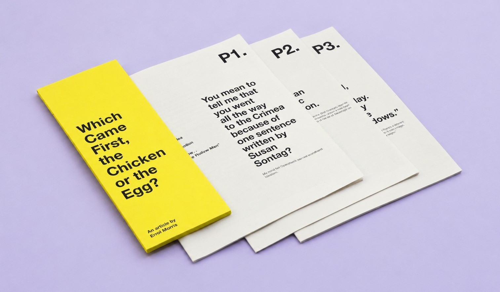
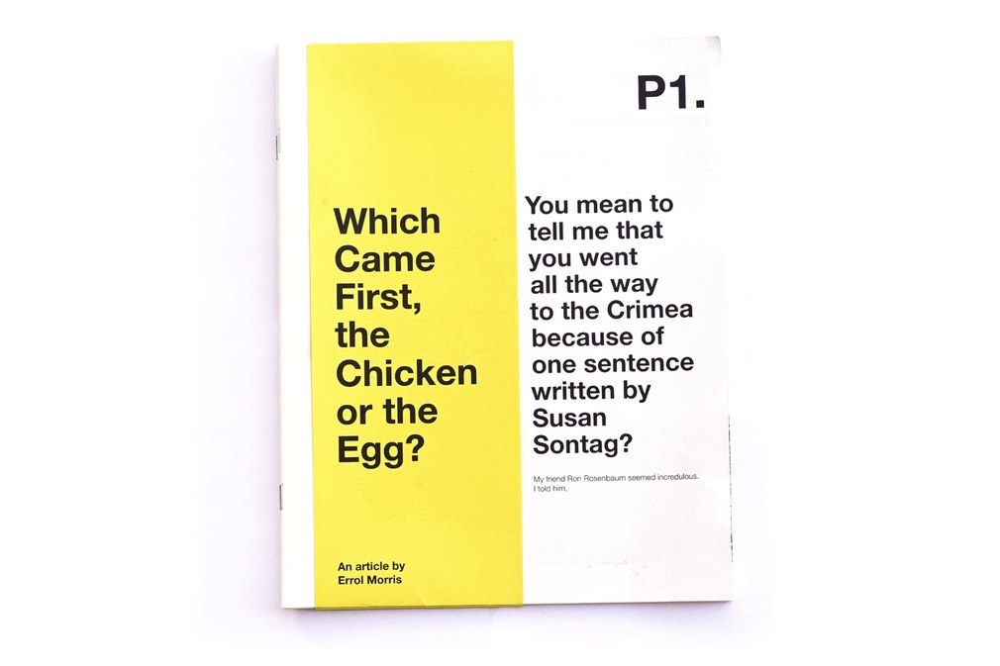
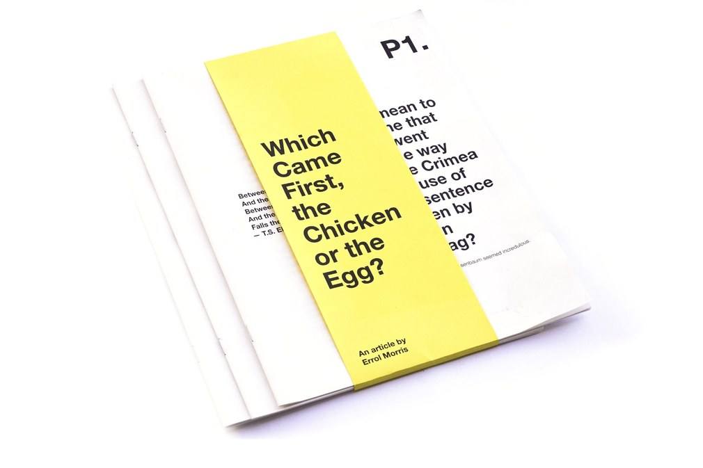
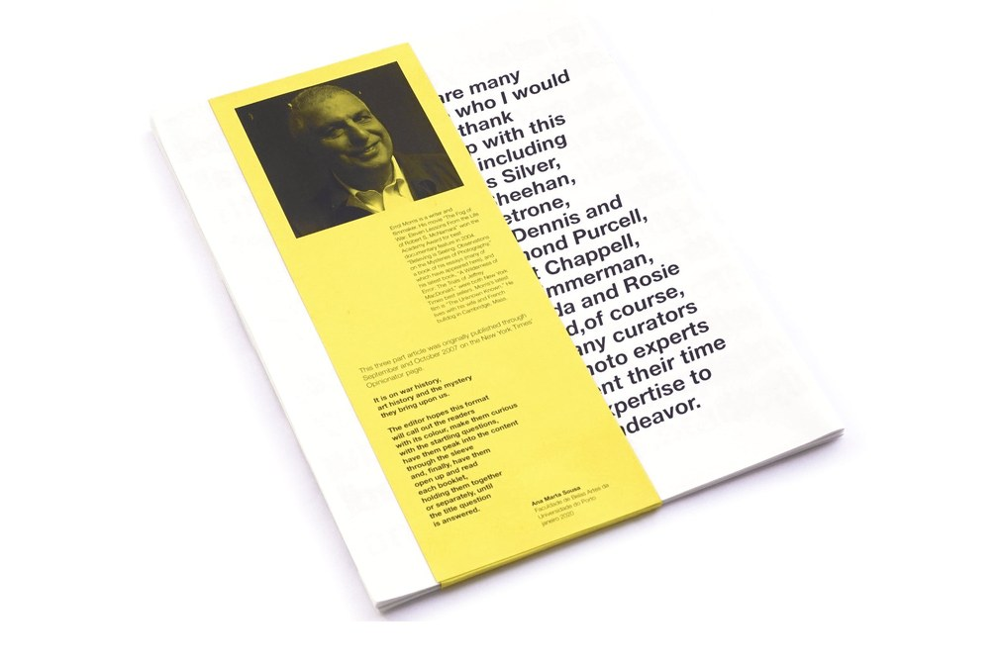
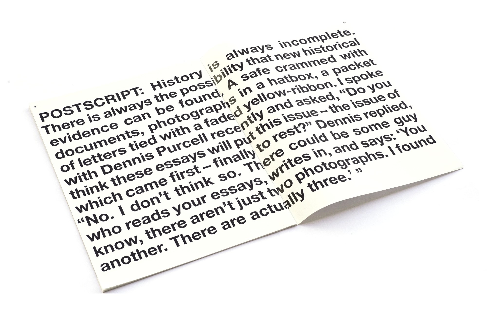
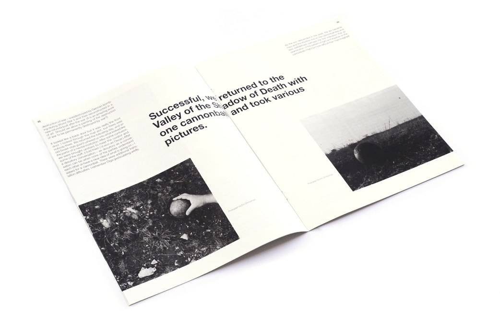
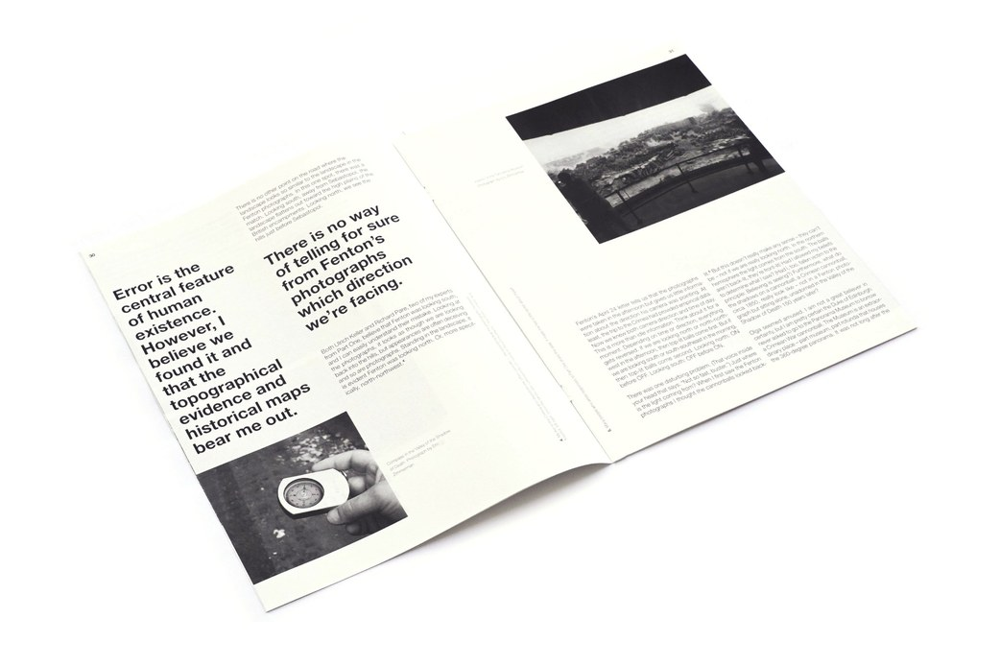
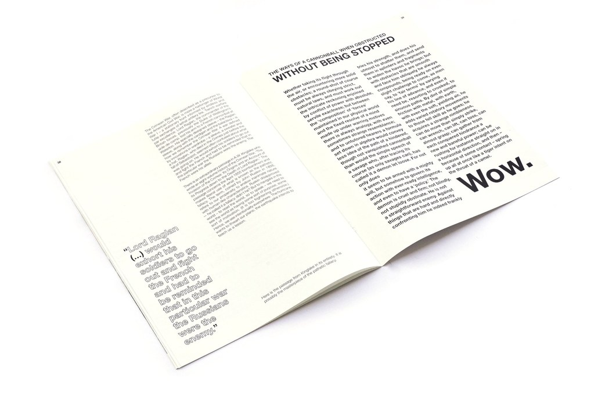
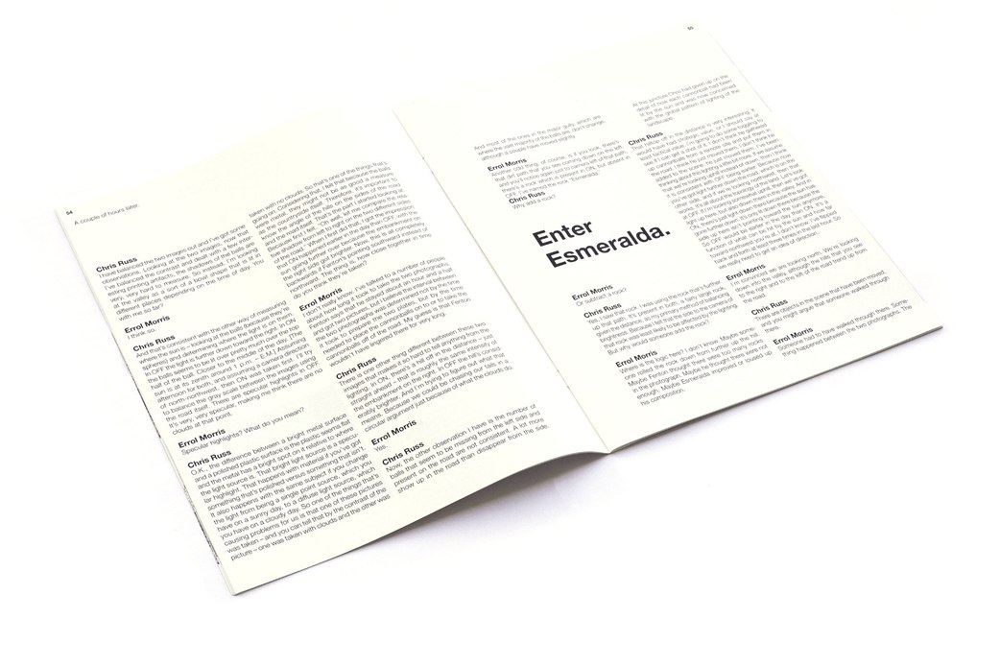
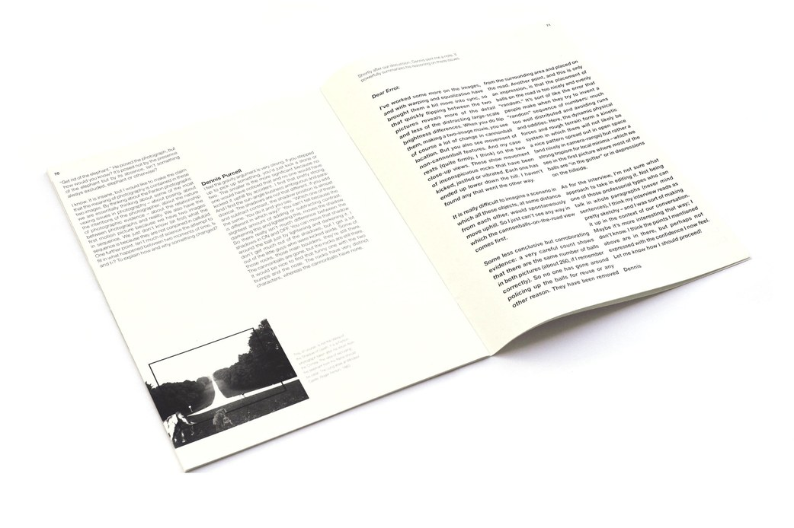
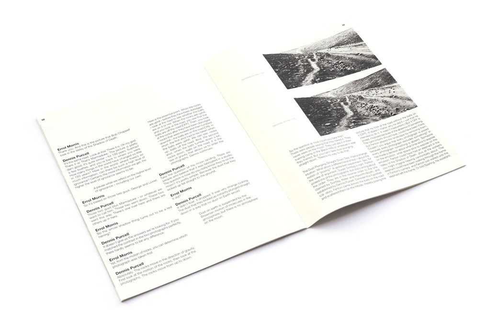